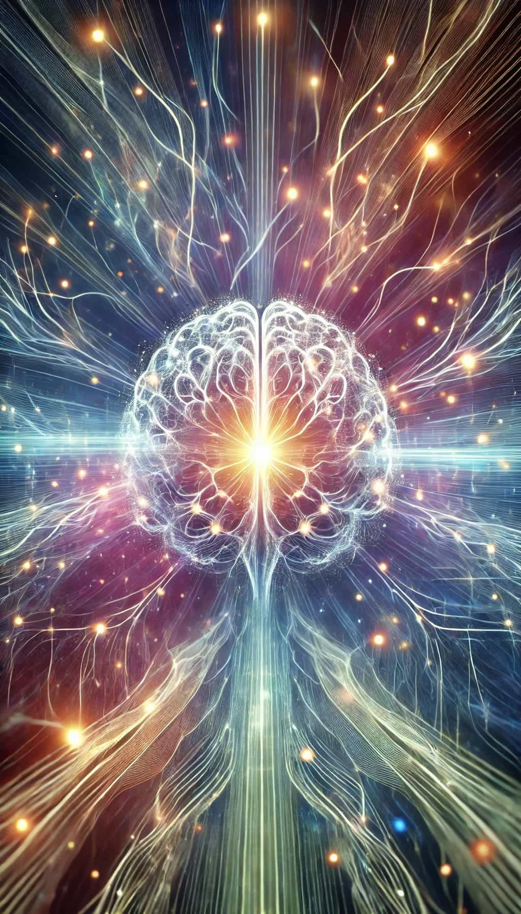
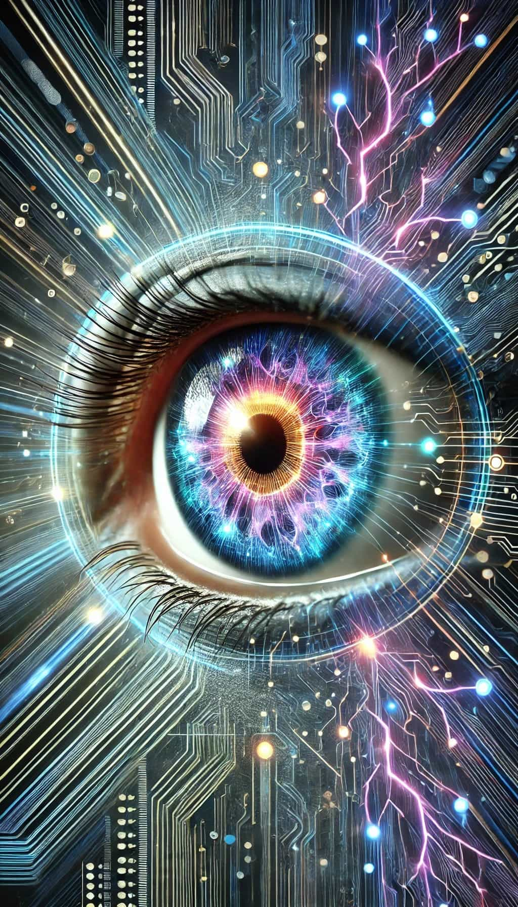

The Great Awakening: A Cognitive Revolution
Introduction
In the grand arc of history, humankind has experienced several transformational shifts: the Agricultural Revolution, the Scientific Revolution, and the Industrial Revolution, each reshaping society, economy, and how we perceive the world. We now stand at the precipice of what could be the most profound revolution of all—the Cognitive Revolution, or "The Great Awakening."
Driven by advancements in neurotechnology and artificial intelligence, this potential awakening promises to reshape our understanding of ourselves, our societies, and our world. As we confront the problems we've created—from climate change to political instability—this cognitive revolution presents the possibility of not just solving these issues but transforming the very nature of human potential.
The Problem: Our Self-Made Challenges
Humans, remarkable as we are, have consistently been both the creators of, and victims to, our own problems. Our intelligence allows us to mold the world in ways no other species can, but it also leads to unintended consequences that imperil our future.
- Environmental Degradation: Our exploitation of the Earth’s resources has led to deforestation, pollution, and the loss of biodiversity, threatening the planet's ecosystems and our survival.
- Social and Economic Problems: Societies are plagued by disparities in education and access to healthcare, creating cycles of poverty and disenfranchisement.
- Conflict and Violence: From cyber warfare to physical armed conflicts, our societies remain steeped in aggression, driven by political, social, and ideological divisions.
- Health Crises: Beyond pandemics, our modern world is rife with lifestyle diseases, mental health crises, and the overall stress of a high-paced, high-pressure life.
- Cognitive Shortcomings: Human decision-making, limited by cognitive biases, emotional reactivity, and short-term thinking, hinders our ability to address these pressing challenges effectively.
These issues stem from the fundamental limitations of human cognition. Despite our intelligence, we are still beholden to instincts and thought patterns that evolved for survival in a far simpler world. As our environment becomes more complex, global, and interconnected, our ancestral brains struggle to keep up.
Universe 00110000
The Core Problem: Our Cognitive Limitations
At the heart of many of our self-created crises are the innate limitations of the human brain. While our cognitive abilities have served us well in many respects, they are ill-equipped to handle the complexity of the modern world. Some of the key challenges include:
- Cognitive Biases: We are prone to errors in thinking that distort reality.
- Short-term Thinking: Many of our decisions prioritize immediate rewards over long-term consequences, contributing to problems like environmental degradation and financial crises.
- Tribalism: Our tendency to form in-groups and out-groups fuels conflicts and hinders global cooperation.
To address these challenges, we need to go beyond incremental improvements in education or policy. We need to enhance human cognition itself.
The Solution: Cognitive Enhancement as a Path to Awakening
What if we could overcome the limitations of our cognitive hardware? Cognitive enhancement—using technology to improve human thinking, memory, creativity, and emotional regulation—offers a potential solution to the deep-seated problems we face.
Key Areas of Cognitive Enhancement
- Enhanced Critical Thinking: Improving our ability to evaluate information critically could help reduce the influence of misinformation and manipulation. Individuals would be better equipped to make decisions based on logic and evidence, leading to better societal outcomes.
- Amplified Emotional Intelligence: With greater emotional awareness and control, we could navigate social dynamics more skillfully, reducing conflicts and fostering cooperation.
- Expanded Working Memory: Increasing our brain’s capacity to hold and process information would allow us to handle more complex problems, from scientific discoveries to political strategies, with greater ease.
- Heightened Self-awareness: With enhanced introspection, individuals could better understand their motivations, biases, and behaviors, leading to more ethical and aligned choices.
The Great Awakening: Confronting Our Past Selves
In the journey of cognitive enhancement and heightened awareness, one of the most profound consequences is the ability to confront our past selves with unparalleled clarity. This enhanced self-reflection offers a dramatic shift in how we perceive and understand our actions, decisions, and beliefs, often provoking intense emotional reactions. Let's explore how this cognitive transformation unfolds.
1. The Shock of Crystal-Clear Retrospection
With enhanced cognition, your ability to look back at past decisions becomes dramatically refined. What was once viewed through the haze of selective memory and emotional bias now becomes clear and undeniable. You gain the cognitive tools to dissect past actions with surgical precision, understanding not just what you did, but the motivations and mental limitations that led you there.
2. Physical and Emotional Sensations: The Weight of Regret
Confronting these realizations can provoke intense physical and emotional reactions. You might experience deep feelings of embarrassment, regret, or even shame as you recall moments in your life where you now recognize your ignorance or emotional reactivity. The physiological sensations—racing heart, flushed cheeks, or a sinking feeling in your stomach—might mirror the discomfort of reliving a deeply awkward or painful experience.
3. Alienation from the Past Self: A Growing Disconnection
As this process of self-reflection deepens, many individuals may begin to feel a sense of alienation from their former selves. The person you once were—defined by cognitive limitations, emotional volatility, and social biases—may now seem like a stranger. This disconnect raises existential questions about identity and continuity. You might feel as though you are no longer the same person, that the version of yourself that existed in the past was someone completely different, unaware of the truths you now see with clarity.
4. The Smell of Our Past
Imagine living your entire life without the ability to smell. You’ve gone about your days unaware that you’ve emitted unpleasant odors, that others around you could detect but you were oblivious to. Then, one day, you suddenly acquire a keen sense of smell.
The shock of realizing that you’ve been carrying an odor all along—one that was off-putting or even repugnant to others—could be overwhelming. Just as this person might now experience the embarrassment and discomfort of knowing they were blind to something so obvious, enhanced cognition forces you to confront the “stench” of your past decisions and behaviors.
5. The Domino Effect of Realizations
Once the process of cognitive awakening begins, it often doesn’t stop with just one realization. Instead, each new insight prompts another, triggering a cascading effect of self-awareness. A single mistake or bias you uncover may lead you to reevaluate related decisions, beliefs, or relationships.
6. Balancing Self-Criticism and Self-Compassion
As these realizations unfold, a natural emotional response is self-criticism. The stark recognition of past mistakes might amplify feelings of regret or shame, particularly as you realize the broader implications of your actions on your life and others. However, cognitive enhancement also provides the opportunity for self-compassion, as you see that your mistakes were part of the process of growth and evolution.
7. Struggling to Relate to Others
As you emerge from this process of enhanced self-awareness, you may find it increasingly difficult to relate to others who haven’t undergone the same transformation. The heightened clarity with which you now see the world can make it challenging to engage in the same conversations, beliefs, and social dynamics that once felt natural.
8. A Rebirth of Identity
Ultimately, the confrontation with your past self may lead to a profound shift in your sense of identity. As you reflect on the ways in which your cognitive limitations shaped your life, you may feel as though you are undergoing a form of rebirth. This sense of rebirth can be both liberating and disorienting, as you grapple with the implications of becoming someone new.
Universe 00110000
Societal Implications of Cognitive Enhancement
The societal effects of a mass cognitive awakening could be profound:
- Collapse of Misinformation: Enhanced critical thinking would likely dismantle the power of propaganda, leading to a society more grounded in facts and evidence.
- Reevaluation of Social Norms: With enhanced empathy and emotional intelligence, societal norms around justice, fairness, and cooperation could be reimagined.
- Economic Transformation: New economic models that prioritize sustainability and well-being over consumption and profit might emerge as individuals become more attuned to long-term consequences.
- Global Cooperation: With reduced tribalism and increased empathy, global challenges could see more cooperative solutions.
Conclusion: A New Chapter in Human Evolution
The Great Awakening represents the next step in human evolution. Cognitive enhancement offers a way to address the root causes of many of our most pressing problems, not through external fixes but by enhancing our capacity to think, feel, and act in alignment with the challenges of our time. By becoming "better humans," we can unlock new levels of creativity, empathy, and wisdom.
This journey will not be easy, nor will it be without ethical and societal challenges. But if we navigate this cognitive revolution with care, it could usher in a new era of human flourishing, where the problems we created can be overcome by the solutions we hold within ourselves.